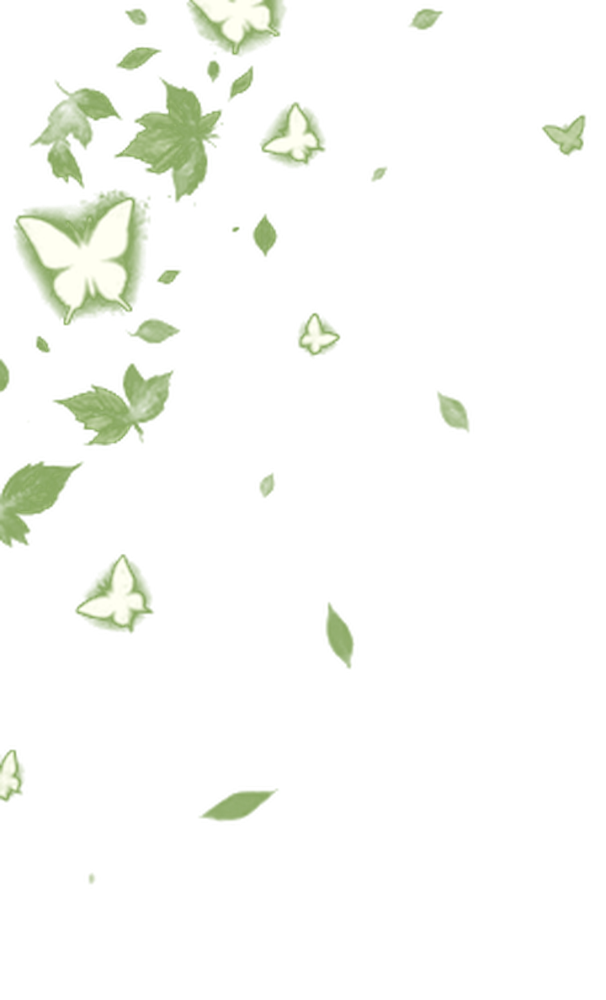
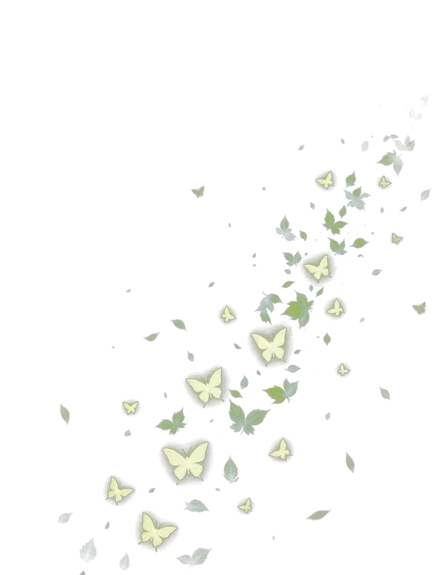
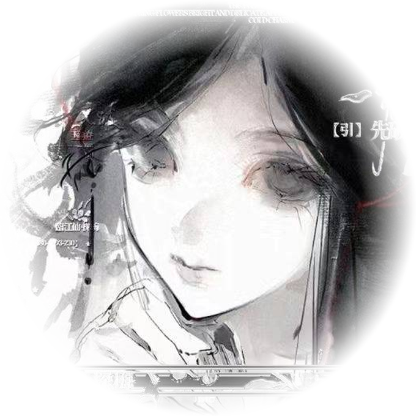

序 · 诗
你的存在陌生
于我奇异如事物
当旧的世界与秩序崩灭
只有爱是救赎的前提
醒
是梦中往外跳伞
摆脱令人窒息的漩涡
漫游者向早晨绿色的地带降落

« 漩涡的波痕
陳引
女|Le-H|INTP
<梦的配方>
« 命运的安排
风格一览
常驻团-瀛洲号
近期复健-慎选
点击上方文字可查看
- 于单前默认已读
- le不拒男但请提前说明 习惯用妳
- 在此过程中若不满意
可在半5min内退单 1h/10min内退单
- 勿在未告知前提下截图传播
- 旁观禁言|禁靠近|禁吵闹
- 喜点雷点请提前说明 提供板卡，不接受暗雷说法
- 若在此过程中有任何不适的情况 可以直接让我滚
- 非特殊情况一般不会主动大幅涉三 如若出现事后不接受此理由客诉
- 禁单口/敷衍回答 有权提前结束转普并结单照常
- 可提前预约 默认先付 不接受口头预约 存单超过14天（两周）默认送单
- 不要披马甲点单 仅接受自带价
- 低无|高恋均不默认恋人
- 如果妳的生活幸福美满|好奇而来点的虐
那为了妳的体验请略过我选择其他人
每晚十一点之后
周末白天
工作日不定时白天有空
雨季拖得太长太久了
森冷的潮湿压在人心上
像老伤口上的一条绷带
--不打算进来看看我吗--
01 / 07